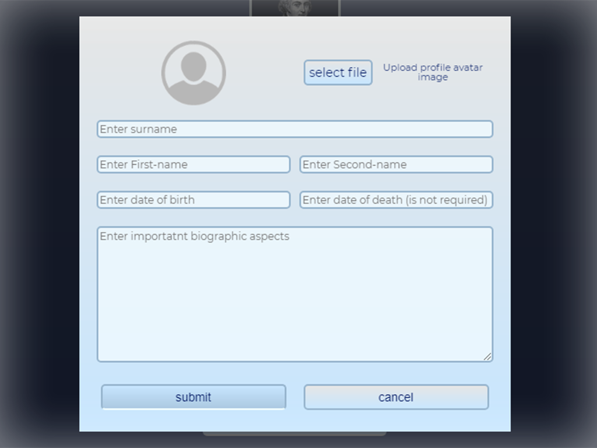
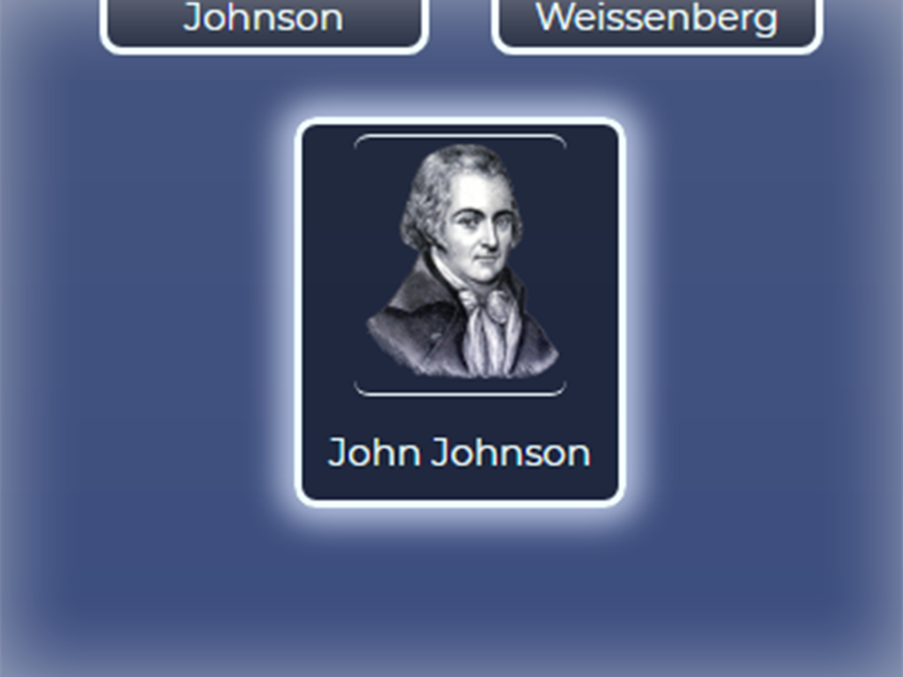

About "Genesis"
Genealogy (from Greek: γενεαλογία genealogia "the making of a pedigree") is the study of families, family history, and the tracing of their lineages. Genealogists use oral interviews, historical records, genetic analysis, and other records to obtain information about a family and to demonstrate kinship and pedigrees of its members. The results are often displayed in charts or written as narratives. The field of family history is broader than genealogy, and covers not just lineage, but also family and community history and biography. The record of genealogical work may be presented as a "genealogy" or a "family history". In the narrow sense, a "genealogy" traces the descendants of one person, whereas a "family history" traces the ancestors of one person, but the two terms are often used interchangeably. A family history may include additional biographical information, family traditions, and the like. The pursuit of family history and origins tends to be shaped by several motives, including the desire to carve out a place for one's family in the larger historical picture, a sense of responsibility to preserve the past for future generations, and self-satisfaction in accurate storytelling. Genealogy research is also performed for scholarly or forensic purposes.
So this platform is created for those who values family history, wants to respectify their own ancestors and descendants.
Add personal files of your relatives by clicking on depending button.
Manage personal information of your relatives by filling in depending fields.
Open profile information by clicking on relative's pesonal avatar.
Share genealogic infomation with your nearests.